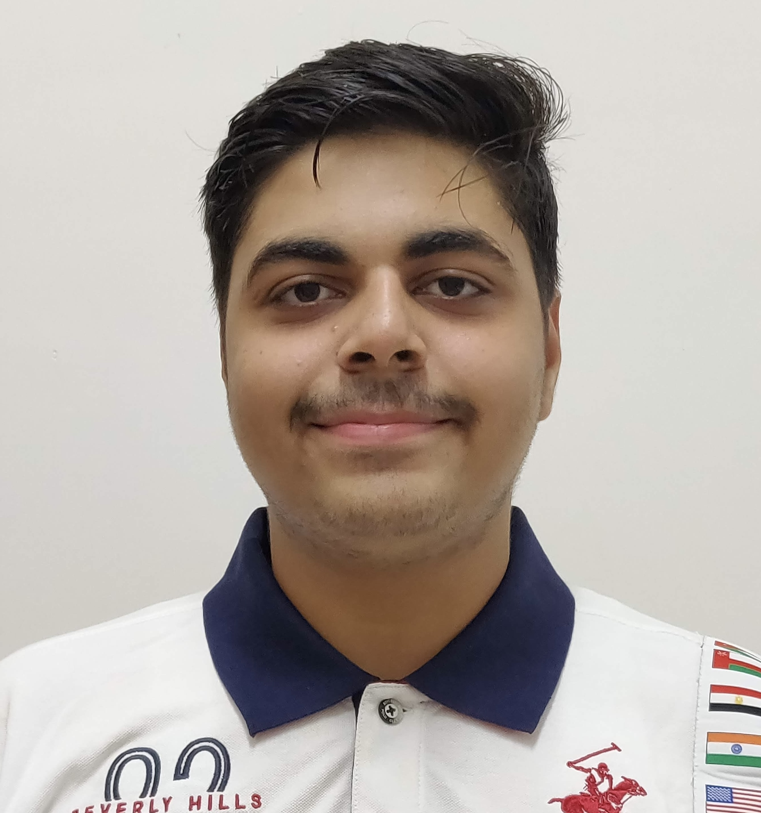

Madhav Narang

Contact Information
Email: madhavnarang3@gmail.com
Phone: 647-839-7240
Location: Gurugram, HR 26
Summary
Adaptable Video Editor with four years of hands-on experience editing film and video pieces to suit audiences. Experienced in editing formal and informal content of different genres. Ambitious, career-focused job seeker, anxious to obtain an entry-level Video Editor position to help launch career while achieving company goals.
Experience
TLEX Institute - Toronto, ON
Freelance Video Editor
- Reformatted audio, digital, and video files for editing, remastering, and transfer.
- Edited three podcasts and multiple reels by adding graphics, titles, audio, and special effects.
Toronto Film School - Toronto, ON
Freelance Video Editor
- Worked on two testimonials, three commercials, one music video, and four short films.
- Completed sound design, sequence selection, and compression for post-production purposes.
- Facilitated projects and contributed to every stage of video and film production.
- Reviewed video and selected the best footage for storytelling.
- Edited video by adding graphics, titles, audio, and special effects.
- Collaborated with the creative team and director to align editing approach with artistic vision.
IIMUN - Mumbai, India
Video Editor Intern
- Transformed raw interview footage into finished work using Adobe After Effects and Premiere Pro.
- Edited eight celebrity video interviews by adding graphics, titles, audio, and special effects.